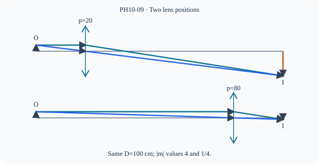

Prerequisite bridge
PH10-07, PH10-08
Before starting, identify the reference frame, directed rays, units and applicable geometric assumptions. Unbound prerequisites remain provisional.
Connected textbook foundation (preserved from PR #5)
9. Why two sharp positions can occur on a fixed object-screen track
Now the major advanced construction. Fix a real object and a screen a distance D apart. A converging thin lens moves between them. Let x be its object distance; its image-screen distance is D-x. Substitution gives
Rearranging produces x^2-Dx+fD=0. The discriminant is D^2-4Df. Two distinct positions are possible only when D>4f. At D=4f the two roots coincide: one physical lens position, not two. For D<4f, no sharp real-screen image can be produced under this ideal model.
The expression x(D-x) reaches its maximum D^2/4 at the midpoint. This geometric argument provides a second check independent of the algebraic discriminant.
Worked anchor: With D=90 cm and f=20 cm, x^2-90x+1800=0, giving x=30 cm or x=60 cm. In the first position the image magnification magnitude is 60/30=2; in the other it is 30/60=1/2. Both images are inverted but have different sizes.
10. The inverse displacement method
Suppose the two lens positions are separated by distance d. Their object distances are roots with sum D, difference d, and product fD. Using
gives x_1x_2=(D^2-d^2)/4, hence
This is a result of the model, not a magic formula to hand out first.
Connected example: If D=80 cm and the measured lens displacement is d=40 cm, f=(6400-1600)/320=15 cm. The check D>4f, or 80>60, is satisfied.
Boundary: As d\to0, D\to4f for the two positions to merge. If a measured record reports two separated positions while D<4f, review the lens model, source-screen setup and measurements before trusting an inferred f.
Build and check the model
For real object and screen separated by D, a thin converging lens between them has distances p>0,q>0 with p+q=D and pq=fD. Thus p²−Dp+fD=0. Two distinct positions exist only when D>4f, one double root at D=4f, none for D<4f. The positions exchange p and q; separation L=√(D²−4fD), hence f=(D²−L²)/(4D).
Worked anchor
D=100 cm,f=16 cm: p=(100±√3600)/2=20,80 cm. Images have magnifications −4 and −1/4. D=64 cm gives only p=q=32 cm.
Condition and limiting check
These results assume fixed real object/screen, positive f, thin lens, paraxial conditions and enough track/aperture. They do not assert that every positive D produces two real positions.
Misconception repair
Do not treat p and q as independent when object and screen stay fixed.
Reasoning diagram

Self-check before transfer
D=90 cm, L=30 cm. Find f and positions.
Check the reasoning
f=(90²−30²)/(4×90)=20 cm; p=30,60 cm.
Source and figure status
Curriculum pointer CBSE10; candidate scope only. Preserved chapter manuscript. Original subtopic-specific figure attached. Scientific figure and teaching-sufficiency reviews remain HOLD.